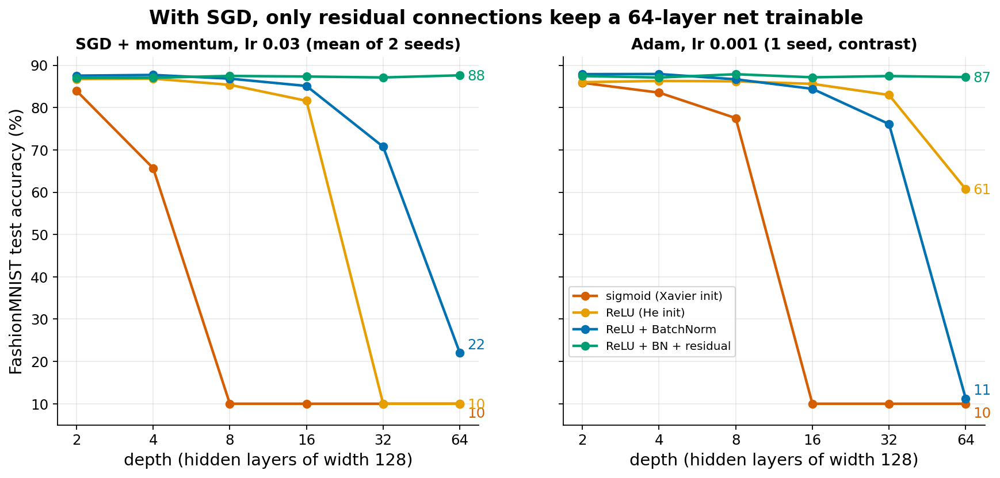
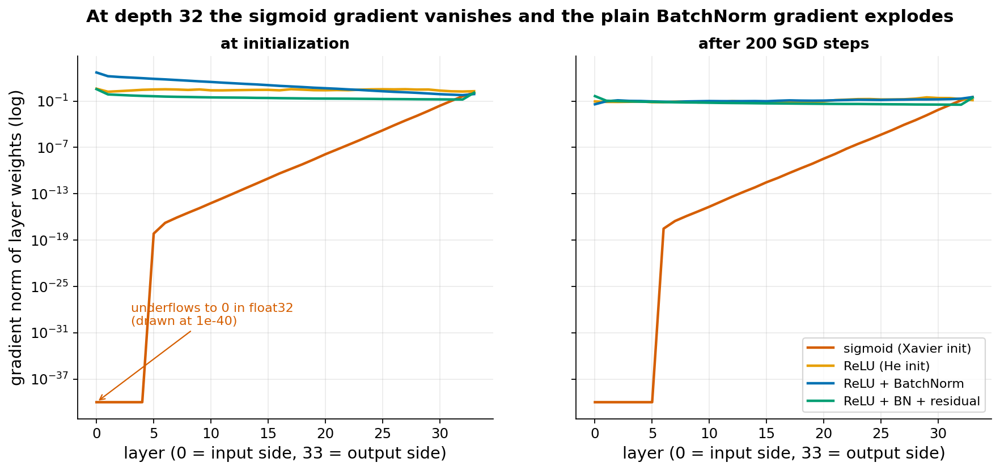

Going deep
The idea
Training a network needs the gradient of the loss with respect to every weight. By the chain rule, the gradient at layer 1 is a product of one Jacobian (matrix of derivatives) per layer above it. A product of 32 or 64 matrices tends to shrink to almost zero or blow up, unless each factor has size close to 1. If the gradient at the early layers is about zero, those layers do not learn. This is the vanishing gradient; the opposite case is the exploding gradient.
The sigmoid makes this worse: its derivative is at most 0.25. With weights scaled so that a linear layer keeps the gradient size, each sigmoid layer still multiplies it by at most 0.25. Over 30 layers that is a factor of at most 0.2530, about 1e-18. ReLU has derivative 1 for positive inputs, so it does not shrink the gradient by itself (Goodfellow, Deep Learning, section 6.3 on hidden units).
Initialization sets the starting scale of the weights. Xavier/Glorot init (Glorot and Bengio 2010) picks the weight variance, 2 / (fan_in + fan_out), so that activations and gradients keep the same size from layer to layer when the activation behaves like the identity near 0, as tanh does. It does not fix the sigmoid, whose slope at 0 is 0.25; the same paper shows that sigmoid networks train badly. He init (He et al. 2015) doubles it to compensate for ReLU zeroing half of the units. See Goodfellow section 8.4 on initialization.
Batch normalization (Ioffe and Szegedy 2015; Goodfellow section 8.7.1) rescales each layer's inputs, for each unit, to mean 0 and standard deviation 1 over the current mini-batch, then applies a learned scale and shift. Mechanically, activation sizes cannot drift from layer to layer. Why this helps is still debated: the original paper argued it reduces "internal covariate shift", while Santurkar et al. 2018 found it mainly makes the loss surface smoother. That BN speeds up and stabilises the training of standard networks is not in doubt. It does not, by itself, make very deep plain networks trainable: Yang et al. 2019 show that in a deep network without skip connections BN makes the gradient explode at initialization.
A residual connection (He et al. 2016) computes x + f(x) instead of f(x). The derivative of that layer is 1 + f'(x), so the gradient always has a direct path through the addition, without being multiplied by weights. The same paper reports the "degradation problem": plain deep nets get worse training error than shallower ones, which is not overfitting. Their plain nets already used BN, so BN alone did not remove the problem there either. Our residual block is the "pre-activation" form of He et al. 2016b: x + W·ReLU(BN(x)), one linear layer per block.
What students would do
Guided notebook (about 55 minutes):
- Build an MLP with a function
make(variant, depth); train a 2-layer sigmoid net and a 2-layer ReLU net on FashionMNIST, compare. - Compute the gradient norm of every layer at initialization for a 32-layer net. Plot it on a log axis for sigmoid and ReLU. Students see the sigmoid gradient fall by many orders of magnitude.
- Do the same with He versus a wrongly scaled init (optional: multiply weights by 0.5 or 2).
- Add BatchNorm, then residual blocks. Repeat the gradient plot.
- Class experiment: each student gets a seed number and runs the grid cells (4 variants x depths 2 to 32 or 64, one seed). Results are sent to the server.
Knob each student varies: the seed (all students) and optionally one variant or depth range, so that every cell of the grid gets many repetitions. Optimizer, learning rate (0.03), epochs (3) and width (128) are fixed.
Live class plot: test accuracy against depth, one line per variant, mean over students with the spread as a band. In the prototype the lines separate cleanly, so a few dozen runs would show it.
Questions for the discussion:
- At which depth does each variant stop learning? Is the order of the lines what the theory predicts?
- Why does the sigmoid net already fail at depth 8, while plain ReLU survives until about 16?
- BatchNorm helps at depth 16 but not at 64. What does the gradient plot at depth 32 tell us?
- The residual net at depth 64 has the same accuracy as at depth 2. Does that mean depth is useless for this data?
What our prototype found


| depth | sigmoid | ReLU | ReLU + BN | residual |
|---|---|---|---|---|
| 2 | 84.0 | 86.7 | 87.6 | 87.0 |
| 8 | 10.0 | 85.4 | 86.9 | 87.5 |
| 16 | 10.0 | 81.6 | 85.2 | 87.4 |
| 32 | 10.0 | 10.0 | 70.8 | 87.2 |
| 64 | 10.0 | 10.0 | 22.0 | 87.7 |
Test accuracy in %, mean of 2 seeds, SGD. Raw numbers per seed are in the prototype's results_sgd.jsonl.
Which effects showed up: sigmoid failure, plain ReLU degradation at depth 32 and above, and the residual fix. What did not match the common shortcut "BN fixes depth": BatchNorm alone did not keep a 32 or 64 layer MLP trainable at this learning rate (it does help at depth 16: 85.2% against 81.6% for plain ReLU). We measured an exploding gradient at initialization, as predicted by Yang et al. 2019. We did not test other learning rates for BatchNorm. Plain ReLU at depth 16 varies between seeds (78.7% and 84.5%).